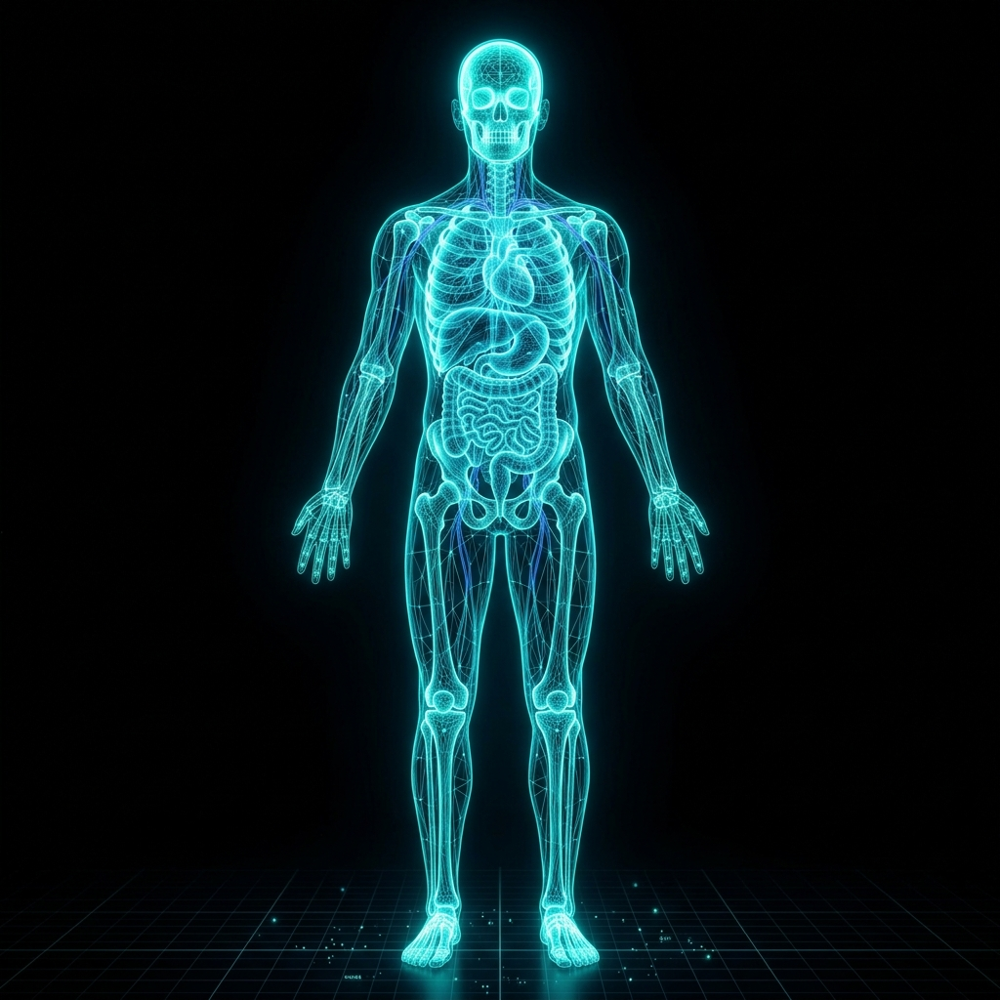

Bridging the knowledge gap. I will be releasing free, unified clinical notes and video breakdowns on various diseases. Designed to be technically rich for fellow doctors, yet clearly explained for the general public.
Deep-dive visual lectures on pathophysiology, diagnostic criteria, and treatment modalities. I will break down complex diseases into digestible concepts using clear analogies alongside technical rigor.
Curriculum currently in development.
Beautifully formatted, downloadable clinical notes summarizing disease etiology, presentation, and management. A unified resource that helps medical students review and helps patients understand.
Notes are being compiled.